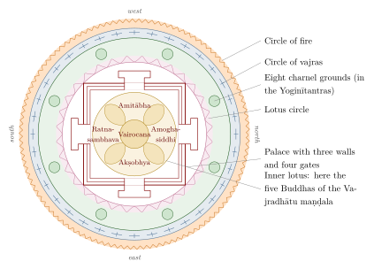

Chapter 10: Buddhist and Jain Tantra¶
10.1 Introduction¶
From about the seventh century CE Indian Buddhism produced its own Tantric scriptures and practices, known as the Mantranaya (“way of mantras”) or Vajrayāna (“vehicle of the vajra”, the diamond-thunderbolt). Buddhist Tantra accepted the goals and philosophy of the Mahāyāna — the bodhisattva’s aspiration to awaken for the sake of all beings, and the doctrine of emptiness (śūnyatā) — but claimed to offer a swifter path to Buddhahood, through initiation, mantra, maṇḍala, deity yoga and the yoga of the subtle body (Snellgrove 1987; Davidson 2002).
The great monasteries of eastern India — Nālandā, Vikramaśīla, Odantapurī and others — became centres of Tantric as well as philosophical study. Scholars such as Nāropa and Atīśa combined philosophical learning with Tantric practice, while the wandering siddhas cultivated a more unconventional style. This chapter treats Buddhist Tantra, and then Jain Tantra (Section 10.19), in relation to the other Tantric traditions; their place within Buddhist and Jain history and institutions is treated in Volume 4, Buddha–Jina Prabhā.
10.2 Historical Development¶
| Period | Development |
|---|---|
| c. 4th–6th century | Protective and mnemonic formulae (dhāraṇīs) in Mahāyāna literature; early ritual texts |
| c. 6th–7th century | Ritual (“Kriyā”) Tantras such as the Mañjuśrīmūlakalpa, Susiddhikara and Subāhuparipṛcchā; the Mahāvairocana |
| c. late 7th–8th century | The Sarvatathāgatatattvasaṅgraha and the Yoga Tantras; transmission to China |
| c. 8th century | The Guhyasamāja |
| c. 9th–10th century | The Yoginītantras (Cakrasaṃvara, Hevajra); the siddha movement |
| early 11th century | The Kālacakra Tantra; the “later diffusion” to Tibet begins |
| late 12th–13th century | Destruction of the great monasteries; decline of Buddhism in most of India |
| 13th century onward | Preservation and systematisation in Tibet; continuity among the Newars of Nepal |
10.3 Classifications of the Buddhist Tantras¶
Indian authors classified the Tantras in several ways. The fourfold scheme that became standard in the Tibetan “new” (Sarma) schools arranges them by the practitioner’s relation to the deity (Snellgrove 1987). The Kriyā (“action”) Tantras, such as the Susiddhikara, the Subāhuparipṛcchā and many ritual texts, stress external ritual, purity and worship, and the practitioner relates to the deity as a servant to a lord. The Caryā (“performance”) Tantras, of which the Mahāvairocana is the chief, balance external ritual and inner meditation, approaching the deity as a friend. The Yoga Tantras, above all the Sarvatathāgatatattvasaṅgraha, centre on meditative identification with the deity. And the Anuttarayoga (“unsurpassed yoga”) Tantras — the Guhyasamāja and the Yoginītantras such as the Cakrasaṃvara, Hevajra and Kālacakra — add the yoga of the subtle body and, in their original form, sexual and transgressive rites.
The Tibetan Nyingma (“old”) school uses a different scheme, culminating in Mahāyoga, Anuyoga and Atiyoga (Dzogchen).
10.4 Key Texts¶
10.4.1 The Guhyasamāja¶
The Guhyasamāja (“Secret Assembly”), probably composed in the eighth century (later in that century rather than earlier), is one of the earliest Tantras to adopt deliberately transgressive language and sexual imagery. Its two exegetical traditions (the Ārya school, which attributed its works to Nāgārjuna and others, and the Jñānapāda school) systematised the “generation” and “completion” stages of practice, including the attainment of the “illusory body” (māyādeha) and the “clear light”. It became especially central for the Tibetan Gelug school.
10.4.2 The Cakrasaṃvara¶
The Cakrasaṃvara (or Laghuśaṃvara) centres on the fierce deity Cakrasaṃvara (Heruka) in union with his consort Vajravārāhī, surrounded by yoginīs and ḍākinīs associated with sacred sites. Sanderson has shown that substantial passages of it were adapted from Śaiva Vidyāpīṭha scriptures (Sanderson 2009). It was especially important for the Kagyu and Sakya schools (Gray 2007). The consort became the object of an independent cult as Vajrayoginī, whose visualisations and rites Elizabeth English has studied from the Sanskrit sādhana literature (English 2002).
10.4.3 The Hevajra¶
The Hevajra Tantra, in two parts of eleven and twelve chapters, centres on Hevajra and his consort Nairātmyā (“selflessness”) with a retinue of eight yoginīs. It teaches the yoga of the subtle body, the experience of four “joys” (ānandas) in sexual yoga, and the innate (sahaja) nature of awakened mind, and includes verses in Apabhraṃśa. The text itself explains the name: “He” signifies great compassion and “vajra” wisdom (Snellgrove 1959). Through the siddha Virūpa it is the basis of the Sakya school’s “Path and Fruit” (Tibetan lam ’bras) teaching, which holds that the fruit of practice is already implicit in the path.
10.4.4 The Kālacakra¶
The Kālacakra (“Wheel of Time”) Tantra and its great commentary, the Vimalaprabhā, composed in the early eleventh century, are the last major Indian Buddhist Tantric works. The system has three levels: an “outer” Kālacakra of cosmology, astronomy and calendar; an “inner” Kālacakra of the human body and its channels, winds and drops; and an “other” (anya) Kālacakra, the path of initiation and yoga by which the outer and inner cycles are purified. Vesna Wallace’s study of the “inner” Kālacakra shows how the text reads the human body, with its channels, winds and drops, as a counterpart of the cosmos and its cycles of time (Wallace 2001). The text also contains an apocalyptic narrative of the kingdom of Śambhala and its conflict with invaders. In modern times the Dalai Lama has given the Kālacakra initiation to very large public gatherings.
10.5 The Subtle Body¶
The Yoginītantras teach a yoga of the subtle body that shares structural features with Śaiva and Śākta systems while interpreting them in Buddhist terms. It describes three channels, the central avadhūtī and the left lalanā and right rasanā; centres (cakras), most commonly four, at the navel, heart, throat and crown; the winds (prāṇa, vāyu) or vital currents that move in the channels; and the drops (bindu), subtle essences, above all the white drop at the crown and the red drop at the navel, whose melting produces bliss.
| Centre | Location | Petals | Associations |
|---|---|---|---|
| Mahāsukhacakra | Crown | 32 | Great bliss |
| Saṃbhogacakra | Throat | 16 | Enjoyment body |
| Dharmacakra | Heart | 8 | Dharma body |
| Nirmāṇacakra | Navel | 64 | Emanation body; the “fierce woman” (caṇḍālī) fire |
10.5.1 Generation and Completion¶
Practice is divided into two stages. In the generation stage (utpattikrama) the practitioner, having meditated on emptiness, visualises the deity’s seed syllable, the protective circle and palace of the maṇḍala, and the deity and retinue, identifying with the central deity; the “wisdom being” (jñānasattva) is invited to merge with the visualised “pledge being” (samayasattva); mantras are recited; and the visualisation is finally dissolved. In the Nyingma tradition the process is preceded by three samādhis: of suchness, of universal illumination (compassion), and of the cause (the seed syllable).
In the completion stage (utpannakrama, sampannakrama) the practitioner works with the subtle body, drawing the winds into the central channel to produce the experiences of bliss and of the “clear light” (prabhāsvara), understood as the fundamental nature of mind. In the original Indian texts these practices included sexual yoga with a consort; later monastic traditions often performed them with a visualised consort.
10.5.2 The Six Doctrines of Nāropa¶
The Kagyu school systematised the completion stage in the “six doctrines” associated with Nāropa: inner heat (caṇḍālī, Tibetan gtum mo), the illusory body, clear light, dream yoga, transference of consciousness at death (’pho ba) and the yoga of the intermediate state (bar do). The last two reflect the importance of the moment of death. Tibetan teachings derived from the Guhyasamāja describe dying as a sequence of dissolutions of the elements, each marked by an inner sign (a mirage, smoke, fireflies, a flickering flame), culminating in the dawning of the “clear light”, which the trained practitioner may recognise as the nature of mind.
10.6 The Five Buddha Families¶
Buddhist Tantra organises its pantheons and correspondences around five “families” (kulas) headed by five Buddhas (Table 10.1).
| Family | Buddha | Colour | Affliction transformed | Wisdom |
|---|---|---|---|---|
| Tathāgata | Vairocana | White | Delusion | Wisdom of the dharmadhātu |
| Vajra | Akṣobhya | Blue | Anger | Mirror-like wisdom |
| Ratna | Ratnasambhava | Yellow | Pride | Wisdom of equality |
| Padma | Amitābha | Red | Desire | Discriminating wisdom |
| Karma | Amoghasiddhi | Green | Envy | All-accomplishing wisdom |
Correlations with the elements, directions and other categories vary between systems. The scheme expresses a central Tantric idea: the afflictions are not merely to be suppressed but transformed into their corresponding wisdoms.
10.7 Initiation (Abhiṣeka)¶
Initiation (abhiṣeka, “consecration”, often translated “empowerment”) by a qualified master is the gateway to Tantric practice. In the Anuttarayoga Tantras four consecrations are given (Table 10.2):
| Consecration | Significance in later systematisations |
|---|---|
| Vase (kalaśa) | Purifies the body; authorises generation-stage practice |
| Secret (guhya) | Purifies speech; authorises practices with the channels and winds |
| Wisdom-knowledge (prajñājñāna) | Purifies mind; authorises the yoga of bliss and emptiness; originally involved union with a consort |
| Fourth (caturtha) | Introduces the nature of mind; authorises the highest meditations (Mahāmudrā, Dzogchen) |
The secret and wisdom consecrations originally involved sexual rites with a consort and the consumption of sexual fluids. Their literal performance became controversial even in India, and in Tibetan monastic settings they were generally given symbolically (Snellgrove 1987; Davidson 2002).
10.7.1 Tantric Vows (Samaya)¶
Initiates take vows (samaya): a standard list of fourteen “root downfalls” (mūlāpatti) forbids, among other things, disparaging the master, abandoning the aspiration to awakening (bodhicitta), abandoning love for beings, revealing secrets to the unprepared and despising women, who are regarded as embodiments of wisdom. The vows show that the antinomian language of the Tantras was framed by a demanding ethical discipline; scholars debate how far the transgressive rites were actually performed and by whom (Wedemeyer 2013). Jacob Dalton has traced how Tibetan Buddhists, from the early manuscripts of Dunhuang onwards, interpreted the violent rites of the Tantras as the “liberation” of hostile beings, and how that interpretation shaped Tibetan ideas of ritual violence and of the subjugation of demons (Dalton 2011).
10.8 The Maṇḍala¶
A Buddhist Tantric maṇḍala typically consists of an outer protective circle of fire and vajras; in the Yoginītantras, eight charnel grounds; a lotus circle; a square palace with four gates; inner circles of deities; and the principal deity at the centre (Figure 10.1). Maṇḍalas are painted, made of coloured powders and ritually dismantled (a practice publicly demonstrated by Tibetan monks today), built in three dimensions or visualised. The size of the assembly varies enormously (Section 8.5.3): the basic Hevajra maṇḍala has nine deities, while the Kālacakra maṇḍala is said to contain over seven hundred.

10.9 The Mahāsiddhas¶
The mahāsiddhas (“great adepts”) were Tantric masters of roughly the eighth to twelfth centuries, active mainly in Bengal, Bihar, Odisha and Assam. A collection of the lives of eighty-four of them, attributed to Abhayadatta, survives in Tibetan. The hagiographies depict men and women of every class — kings and princesses, Brahmins, monks, fishermen, cobblers, weavers and prostitutes — who attained awakening through Tantric practice, often while living unconventionally in cremation grounds and forests. Their vernacular songs, the Caryāgīti and the dohās, are among the earliest literature in eastern Indo-Aryan languages and are claimed by Bengali, Odia, Assamese and Maithili literary history alike (Table 10.3).
| Siddha | Background in hagiography | Associated teaching |
|---|---|---|
| Saraha | Brahmin who became an arrow-maker | Songs (dohās) on the innate (sahaja) nature of mind |
| Lūipā | Royal renunciant who lived on fish entrails | A Cakrasaṃvara lineage |
| Virūpa | Monk | “Path and Fruit” teaching of the Hevajra |
| Tilopā | Sesame-pounder | Teacher of Nāropa; Mahāmudrā |
| Nāropā | Scholar of Nālandā or Vikramaśīla | The six doctrines; teacher of the Tibetan Marpa |
| Lakṣmīṅkarā | Princess | A female siddha; teachings on the innate |
10.10 Women in Buddhist Tantra¶
The place of women in Buddhist Tantra is debated. The Yoginītantras exalt the feminine: wisdom is female, the central deities are often goddesses or deities in union with consorts, one of the root vows forbids despising women, and the hagiographies include female siddhas such as Lakṣmīṅkarā and teachers who instruct male disciples. Miranda Shaw has argued that women were full participants and sometimes leaders in the early Tantric movement (Shaw 2006). Other scholars, such as David Snellgrove and Ronald Davidson, read the same texts as written primarily from the point of view of male practitioners, for whom women were above all ritual partners, and note that in later Tibetan monastic institutions women’s opportunities for advanced practice and teaching were limited (Snellgrove 1987; Davidson 2002). Both readings find support in the sources, which were produced in varied settings over several centuries.
10.11 Tārā¶
Tārā (“she who carries across”), the female saviour, is the most popular goddess of Buddhist devotion. She appears in Indian Buddhist art and literature from about the sixth or seventh century, first as a companion of the bodhisattva Avalokiteśvara (a later legend has her born from his tear of compassion) and then as an independent saviour who rescues devotees from the “eight great fears”. Her best-known forms are the green and white Tārās, and Tibetan tradition celebrates twenty-one forms. She is regarded as a bodhisattva and, in Tantric contexts, as a fully awakened Buddha (Shaw 2006).
The relation with the Hindu Mahāvidyā Tārā (Chapter 4) is not one of simple identity. The Hindu goddess, fierce and associated with the cremation ground, derives largely from fierce Buddhist forms such as Ekajaṭā and Ugratārā, and some Hindu Tantras openly acknowledge a “Chinese” (that is, Tibetan or Himalayan) mode of her worship. The gentle, compassionate saviour who dominates Buddhist devotion has no close Hindu counterpart. Tārā thus illustrates both the exchange between the traditions and their differences (Kinsley 1997; Shaw 2006).
10.12 Buddhist and Hindu Tantra¶
Hindu and Buddhist Tantra share a common vocabulary of practice: initiation (the Hindu dīkṣā, the Buddhist consecration or abhiṣeka); mantras and seed syllables, to which the Buddhists add the dhāraṇī; diagrams, the yantras and maṇḍalas of the Hindus and the maṇḍalas of the Buddhists; and a subtle body of channels and centres, in which the Hindu kuṇḍalinī has its Buddhist counterpart in the inner fire (caṇḍālī) and the winds and drops. The goals differ: realisation of identity with Śiva or the Goddess on the one side, Buddhahood as the union of emptiness and bliss on the other.
The parallels are real, but so are the differences. Buddhist Tantra reverses the gender symbolism of Hindu Śākta theology: the female principle is wisdom, the male compassionate activity. And the Buddhist systems interpret everything through the doctrine of emptiness rather than a theology of a supreme self. Historically, Sanderson has shown detailed textual borrowing from Śaiva scriptures into the Yoginītantras, while Buddhist goddesses such as Tārā passed into Hindu worship; the Pāla courts of eastern India patronised both religions (Sanderson 2009).
10.13 Dhāraṇīs¶
The dhāraṇī (“that which holds”) — a formula used for protection, for memory and for liberation — is found in Mahāyāna literature well before the Tantras and is one of their main sources. Many Mahāyāna sūtras contain such formulae, and whole texts were devoted to them. The Prajñāpāramitāhṛdaya (the “Heart Sūtra”) ends with the mantra gate gate pāragate pārasaṃgate bodhi svāhā; the Uṣṇīṣavijayā dhāraṇī, recited for the purification of karma and protection from bad rebirth, was very widely disseminated in East Asia; the Sitātapatrā invokes the goddess of the White Parasol for protection; the five protective texts of the Pañcarakṣā, among them the Mahāpratisarā, came to be personified as five goddesses; and the Kāraṇḍavyūha Sūtra is the earliest source of Avalokiteśvara’s mantra oṃ maṇipadme hūṃ.
The early ritual Tantras later classed as Kriyā Tantras set such spells within a regulated ritual of worship. The Mañjuśrīmūlakalpa, a large and composite text, prescribes the painting of cloth images and the drawing of a maṇḍala of Mañjuśrī and his retinue, the conduct of the practitioner, the times, places and materials of mantra practice and rites for many worldly ends; one of its later chapters even contains a prophetic history of Indian kings. The Susiddhikara and the Subāhuparipṛcchā regulate the recitation of mantras, the observances of the reciter and the fire offerings appropriate to different aims. These texts already sort their deities into “families” — the families of the Tathāgata, the Lotus and the Vajra — from which the later five-family scheme grew (Section 10.6). Their aims were largely practical — protection, rain, healing, success — but they placed them within the bodhisattva’s aspiration, and their ritual repertoire of purification, invocation, offering and recitation passed into all later Buddhist Tantra (Snellgrove 1987; Davidson 2002).
10.14 Transmission Beyond India¶
10.14.1 Tibet¶
Tibetan tradition distinguishes two diffusions of Buddhism. The “early diffusion” of the eighth and ninth centuries is associated with the Indian abbot Śāntarakṣita and the Tantric master Padmasambhava, invited by King Trisong Detsen; the Nyingma school traces its lineages to this period. The “later diffusion” began in the late tenth and eleventh centuries with translators such as Rinchen Zangpo (958–1055) and Marpa, and the arrival of Atīśa (982–1054) (Samuel 2008). Each of the main schools gave priority to particular Tantric systems: the Nyingma to Mahāyoga, Anuyoga and Atiyoga (Dzogchen, the “Great Perfection”); the Kagyu to Mahāmudrā and the six doctrines of Nāropa; the Sakya to the “Path and Fruit” based on the Hevajra; and the Gelug, founded by Tsongkhapa (1357–1419), to an integration of all four classes of Tantra with monastic discipline and scholastic study, with particular emphasis on the Guhyasamāja, Cakrasaṃvara and Kālacakra.
The Tibetan canon (Kangyur and Tengyur) preserves translations of thousands of Indian Tantric texts, many of which are lost in Sanskrit.
10.14.2 East and Southeast Asia¶
Table 10.4 summarises Tantric traditions beyond the subcontinent.
| Region | Period | Evidence |
|---|---|---|
| China and Japan | 8th c. onward | Esoteric Buddhism of Śubhakarasiṃha, Vajrabodhi and Amoghavajra in Tang China; Shingon and Tendai in Japan |
| Cambodia | 9th–13th c. | Royal Śaiva initiation and the devarāja cult, described in the Sdok Kak Thom inscription as Śaiva; Buddhist Tantric deities such as Hevajra in Khmer art; the Buddhist temples of Jayavarman VII (late 12th century) |
| Java | 8th–15th c. | Buddhist Borobudur and Śaiva Prambanan; Tantric Buddhist texts in Old Javanese; a syncretic Śiva–Buddha cult in East Java |
| Bali | To the present | Śaiva and Buddhist (boda) priests (pedanda) serving a Hindu-Balinese community |
| Nepal | 5th c. to the present | Newar Buddhist Vajrayāna alongside Hindu Tantra; many Sanskrit texts preserved |
10.14.3 Borobudur¶
Borobudur in Central Java (c. 800 CE) rises in nine terraces — six square and three circular — crowned by a central stūpa, with 2,672 relief panels and 504 Buddha images. It is often read as an ascent from the realm of desire through the realm of form to the formless, and sometimes as a three-dimensional maṇḍala; whether its programme is specifically Tantric or more broadly Mahāyāna is debated.
10.15 Mahāmudrā and Dzogchen¶
Two Tibetan traditions present the culmination of Tantric practice as a direct recognition of the nature of mind. Mahāmudrā (“great seal”), a term that in the Indian Tantras denotes the final union of bliss and emptiness and is celebrated in the songs of Saraha and other siddhas, became in the Kagyu school the name of a contemplative path of resting in the luminous, empty nature of mind, taught both within and apart from Tantric initiation. Dzogchen (“great perfection”), the highest of the Nyingma vehicles, teaches that awareness is primordially pure and spontaneously present, so that realisation consists in recognising and abiding in it rather than in producing anything new. Both traditions were the subject of controversy in Tibet, where critics questioned their authenticity and their relation to the gradual path, and both have become widely known in the modern West (Samuel 2008).
10.16 Esoteric Buddhism in China and Japan¶
In the eighth century three Indian masters — Śubhakarasiṃha (637–735), Vajrabodhi (671–741) and Amoghavajra (705–774) — brought the Mahāvairocana and Sarvatathāgatatattvasaṅgraha systems to Tang China, where they translated texts, performed rituals for the protection of the state and enjoyed imperial patronage. After the persecution of Buddhism in 845 the Chinese tradition declined, but it had already been transmitted to Japan. Kūkai (774–835) founded the Shingon school on the basis of the two great maṇḍalas of these texts, the “Womb Realm” and the “Diamond Realm”; the Tendai school also absorbed esoteric practice. In Japan, Sanskrit mantras and seed syllables were written in the Siddhaṃ script, which is still used there in ritual, and Indian deities such as Sarasvatī (Benzaiten) and Gaṇeśa (Kangiten) entered Japanese religion through esoteric Buddhism.
10.17 Newar Buddhism¶
The Newars of the Kathmandu Valley preserve the only surviving Sanskrit-based Buddhist Tantric tradition of South Asia. Newar Buddhism has a married, hereditary clergy — the Vajrācāryas, who perform Tantric rites, and the Śākyas — living in courtyard monasteries (vihāras). Its rituals, conducted in Sanskrit from manuscript handbooks, include initiation into the maṇḍalas of Cakrasaṃvara and Vajravārāhī, fire offerings and life-cycle rites parallel to those of their Hindu neighbours, with whom the Newar Buddhists share festivals, deities and a caste organisation. Nepalese libraries also preserved many of the oldest manuscripts of Indian Buddhist and Śaiva Tantras (Gellner 1992; Samuel 2008).
10.18 The Decline of Buddhism in India¶
By the fourteenth century Buddhism, and with it Buddhist Tantra, had almost disappeared from the Indian plains, though it survived in the Himalaya, among the Newars of Nepal and in small pockets elsewhere. The decline was a long and uneven contraction rather than a single event: already in the seventh century Xuanzang found many monasteries deserted, and by the eleventh and twelfth centuries the main strongholds were the great monasteries of Bihar and Bengal under the Pālas, together with Kashmir and pockets in Odisha and the south. Historians agree that there was no single cause.
The great monasteries of Nālandā, Vikramaśīla and Odantapurī were sacked around 1200, during the campaigns of the Ghurid general Muhammad Bakhtiyār Khaljī in Bihar and Bengal (c. 1193–1205), and many monks fled to Nepal and Tibet. These campaigns also struck Brahmanical temples and the states that had protected the monasteries, but because Buddhist learning was concentrated in a few great institutions their loss was decisive. Activity did not cease at once: the Tibetan pilgrim Dharmasvāmin, who visited Bihar in 1234–1236, found Nālandā largely ruined but the aged master Rāhula Śrībhadra still teaching some seventy students there (see Volume 4, Buddha–Jina Prabhā). The destruction came on top of a longer loss of patronage. The large monasteries depended on land grants and royal favour; as most early medieval rulers turned their patronage to Brahmanical temples and grantees, and as the Pāla dynasty came to an end, they lost their resources, and their relatively weak lay support left them exposed. Hindu devotional and Tantric movements, meanwhile, competed successfully for lay allegiance, and some Buddhist deities and practices were absorbed into Śākta and Nātha traditions.
The relative weight of these factors is debated; most historians see a long process of decline that the destruction of the great monasteries brought to a close (Davidson 2002; Samuel 2008).
10.19 Jain Tantra¶
The Jains, who reject blood offerings and the transgressive elements of Kaula and Buddhist Tantra, nonetheless adopted much of the Tantric repertoire of mantra, diagram and goddess worship (Sanderson 2009). The central Jain formula, the “fivefold homage” (pañcanamaskāra), beginning ṇamo arahantāṇaṃ, is recited by all Jains and treated as a mantra of great power, and a secret sūrimantra is transmitted at the consecration of an ācārya. Among Śvetāmbara Jains the siddhacakra or navapada diagram, honouring the five supreme beings and the four virtues of right faith, knowledge, conduct and austerity, is worshipped especially during the biannual ōlī festival, and the ṛṣimaṇḍala is another important diagram. The attendant goddesses (śāsanadevatās, yakṣīs) of the Tīrthaṅkaras — above all Padmāvatī, Ambikā, Cakreśvarī and Jvālāmālinī — and the sixteen goddesses of knowledge (vidyādevīs) became objects of worship for worldly protection and prosperity. Handbooks such as Indranandi’s Jvālāmālinīkalpa (939) and Malliṣeṇa’s Bhairavapadmāvatīkalpa (11th century) adapt mantra, diagram and even the “six acts” (Section 7.3.3) to Jain purposes.
Jain authors justified these practices as serving the welfare of the community and the protection of the teaching, while insisting that the liberated Tīrthaṅkaras themselves do not intervene in worldly affairs; it is their attendant deities who respond to worship.
10.19.1 Mantra and Monastic Authority¶
Among the image-worshipping Śvetāmbaras the most important mantra is the sūrimantra. It is conferred on a monk when he is raised to the rank of ācārya (sūri), transmitted orally and kept secret, and traced by tradition to Gautama Indrabhūti, the chief disciple of Mahāvīra. The ācārya periodically withdraws to propitiate it in retreat, and its power is regarded as the source of his authority. Only an ācārya who possesses it may perform the “eye-opening” consecration (añjanaśalākā) that turns a newly made image of a Jina into an object of worship. Paul Dundas has shown how the literature of the sūrimantra links the monk’s identity to that of Gautama, so that each new ācārya in a sense “becomes” the first disciple (Dundas 1998). Ellen Gough’s study of the sūrimantra, of the diagrams on which it is worshipped and of the meditations of present-day Śvetāmbara ācāryas goes further: drawing on texts and fieldwork, she argues that Tantric ritual is not a lay accretion to Jain asceticism but has long been part of the path of the renouncer himself (Gough 2021). Ritual manuals such as the Vidhimārgaprapā (1306) of Jinaprabhasūri, a Kharatara Gaccha monk who was also remembered for his mantra powers at the court of Muḥammad bin Tughluq, codified consecration, initiation and mantra rites for the community (Dundas 2002).
Among the Digambaras, image consecration was regulated by manuals such as the thirteenth-century Pratiṣṭhāsāroddhāra of the lay scholar Āśādhara, which prescribe nyāsa, mantras and homa in forms close to those of Śaiva manuals, and the bhaṭṭārakas — clerics who administered temples and lands — were the principal ritual specialists of the community for several centuries.
10.19.2 Protector Deities¶
Much Jain Tantric practice is directed to protector deities rather than to the Jinas themselves.
Padmāvatī, the snake-hooded attendant goddess of Pārśvanātha, is the most widely worshipped. Her principal Digambara centre is Humcha (Hombuja) in Karnataka, where, according to legend, the founder of the Śāntara dynasty received her favour, and where she remains the object of a major pilgrimage cult.
Ghaṇṭākarṇa Mahāvīra, a martial protector deity, has a popular shrine at Mahudi in Gujarat, founded by the Śvetāmbara monk Buddhisāgarasūri in the early twentieth century; devotees seek his help in worldly difficulties, and it is customary to eat the sweet offered to him within the precinct.
Bhairavas and field-guardians (kṣetrapālas) protect temples and pilgrimage sites; Nākoḍā Bhairava, at the Pārśvanātha shrine of Nākoḍā in Rajasthan, draws large numbers of pilgrims.
The Dādāgurus, four deceased ācāryas of the Kharatara Gaccha who lived between the twelfth and early seventeenth centuries, are worshipped in shrines (dādābāṛī) bearing their footprints. Their hagiographies tell how they overcame rival adepts and, in the case of Jinadattasūri, subdued the sixty-four yoginīs; devotees ask them for help in business, health and family matters (Laidlaw 1995).
10.19.3 Interpreting Jain Tantra¶
Jain teachers have long been aware of a tension between these practices and the ascetic path to liberation. The standard justification is that the protector deities are beings of right faith (samyagdṛṣṭi) who serve the Jina’s teaching, and that worship of them for worldly ends is legitimate so long as it is not confused with the worship of the Jinas. John Cort has described Jain religious life as shaped by two value systems — the path to liberation (mokṣamārga) and a realm of well-being concerned with health, prosperity and the welfare of the community — and has argued that the second is not a corruption of the first but an integral part of Jain practice (Cort 2001). Reformers have taken a different view. The non-image-worshipping Śvetāmbara movements reject temple ritual altogether, and the Digambara Terāpanth, from the seventeenth century, rejected both the worship of protector deities and the authority of the bhaṭṭārakas. In historical perspective, the Jain adoption of mantra, consecration rites and protector cults is part of the wider Tantric transformation of Indian religion described in Chapter 12 (Dundas 2002; Sanderson 2009).